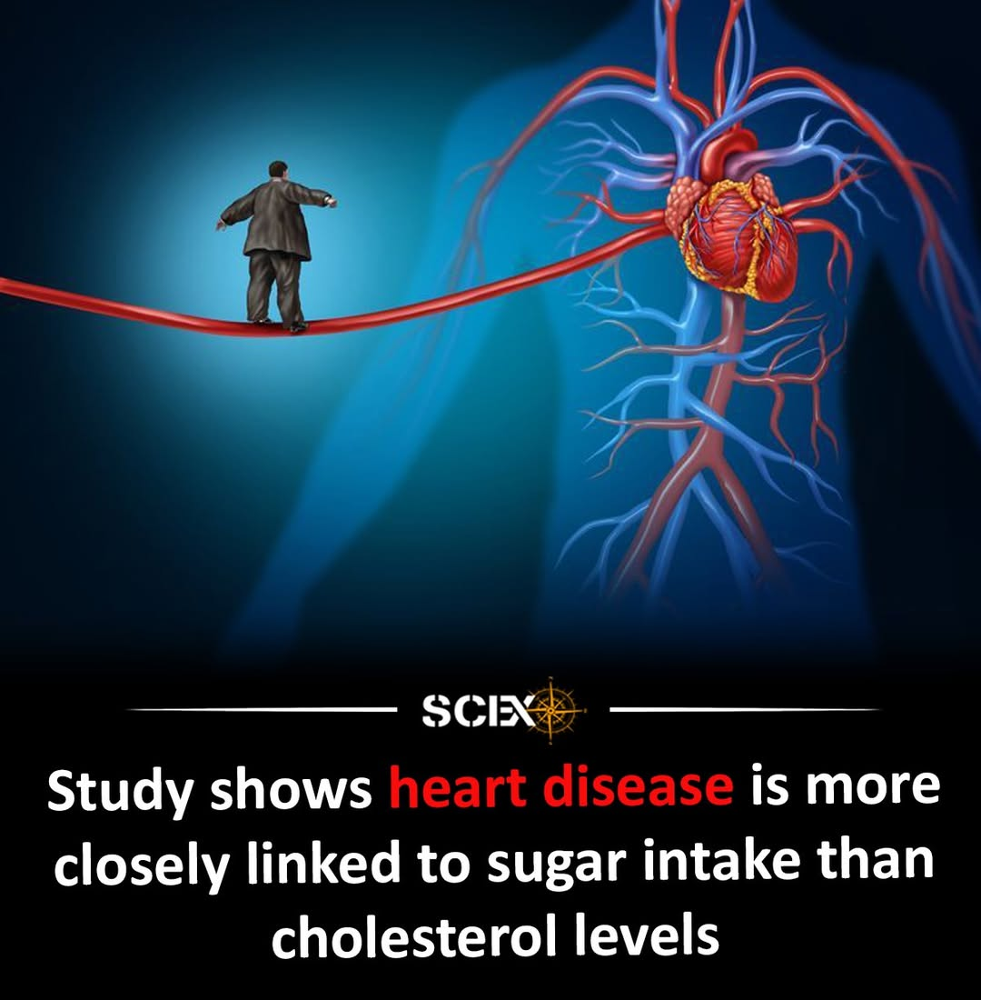

High added sugar linked to over double the risk of heart disease death in a JAMA IM study
A shared summary describes a 15-year JAMA Internal Medicine study in which people getting 25% or more of calories from added sugar had over twice the CVD death risk of those under 10%, regardless of weight or other factors. Louis clarifies that the comparison is with dietary cholesterol, not blood cholesterol.